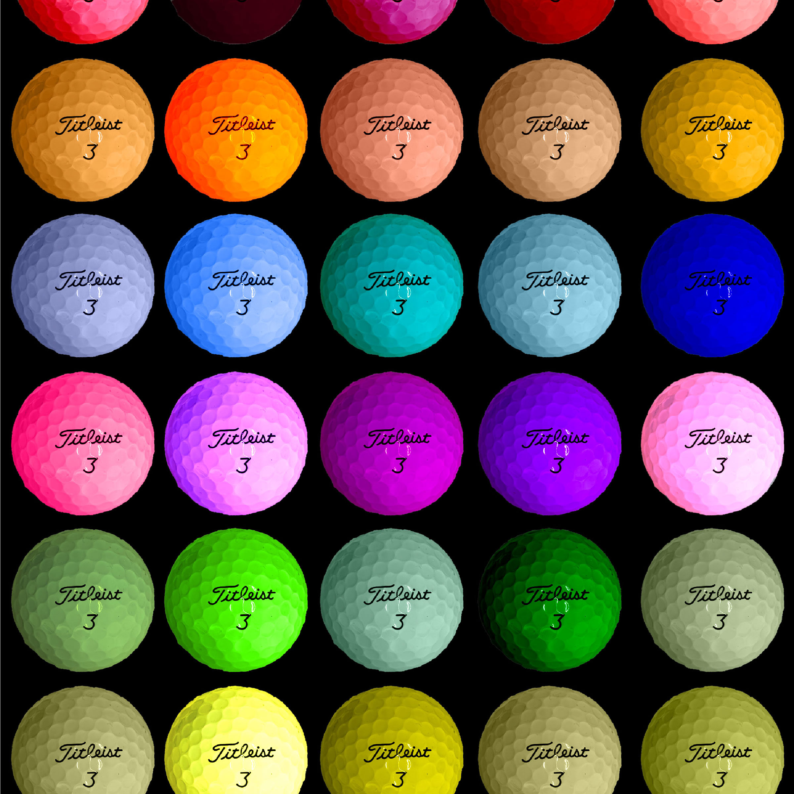

Illustrator Color Depiction

This project focuses on the transformative potential of Adobe Illustrator by altering a single image through precise adjustments in hues, saturations, and shade variations. We will explore the art of color manipulation to create a visually captivating and conceptually rich composition, showcasing the profound impact that such modifications can have on the mood, narrative, and overall aesthetic of an image. Through these alterations, we aim to unlock the full creative spectrum that Adobe Illustrator offers, pushing the boundaries of visual storytelling and providing a testament to the power of digital design tools in the hands of skilled artists.